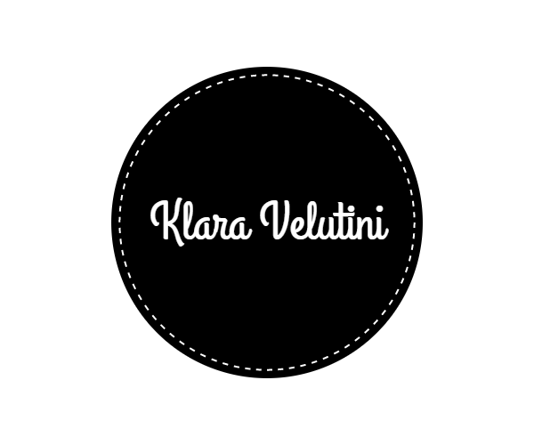

Home

About me
Klara Velutini is an International Student from Venezuela, at the Miami International University of Art and Design. She is pursuing a career in Advertising, and she currently holds the presidency of the Insomniads (advertising student club). Before coming to the United States, she studied Mass Comunication at Universidad Catolica Andres Bello in Caracas, Venezuela, where she was part of the Student Council. Klara has participated in Harvard Model United Nations for more than 5 years, where she got the chance to travel to Boston and Australia. She is currently looking for an internship position in an advertising company and would like to hold an account managing position in the future.